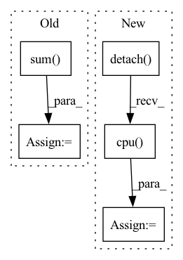

Pattern ID :39736
Before Change
assert estimated_sources_amplitude.dim() == 4, "estimated_sources_amplitude.dim() is expected 4, but given {}.".format(estimated_sources_amplitude.dim())
ratio = estimated_sources_amplitude / estimated_sources_amplitude.sum(dim=0)
estimated_sources = ratio * mixture
norm = max(1, torch.abs(mixture).max() / 10)
mixture, estimated_sources = mixture / norm, estimated_sources / normAfter Change
device = mixture.device
dtype = mixture.dtype
mixture = mixture.detach().cpu() .numpy()
estimated_amplitude = estimated_amplitude.detach().cpu().numpy()
mixture = mixture.transpose(2, 1, 0)
estimated_amplitude = estimated_amplitude.transpose(3, 2, 1, 0)
estimated_sources = norbert.wiener(estimated_amplitude, mixture, eps=eps)
estimated_sources = estimated_sources.transpose(3, 2, 1, 0)
estimated_sources = torch.from_numpy(estimated_sources).to(device, dtype)
return estimated_sourcesIn pattern: SUPERPATTERN
Frequency: 3
Non-data size: 5
Instances Fragment ID: 113177359
Project Name: tky823/dnn-based_source_separation
Commit Name: 11a2e82888f76547df72eff58c6a592e3473e65c
Time: 2021-08-20
Author: 40362510+tky823@users.noreply.github.com
File Name: egs/musdb18/d3net/src/adhoc_driver.py
M Class Name: AnonimousClass
N Class Name: AnonimousClass
M Method Name: apply_multichannel_wiener_filter(4)
N Method Name: apply_multichannel_wiener_filter(5)
M Parent Class:
N Parent Class:
M File Name: egs/musdb18/d3net/src/adhoc_driver.py
N File Name: egs/musdb18/d3net/src/adhoc_driver.py
M Start Line: 383
M End Line: 401
N Start Line: 397
N End Line: 413
Before Change
R_tgt_src = out["R"][0, -1, :2, :2]
t_st_in_t = out["t"][0, -1, :2, :]
error = tgt_p - (R_tgt_src @ src_p + t_st_in_t)
mah = torch.sqrt(torch.sum( error * error * torch.exp(out["match_weights"][-1]), dim=0) .squeeze())
error2_sqrt = torch.sqrt(torch.sum(error * error, dim=0).squeeze())
plt.imshow(radar, cmap="gray")After Change
scores = out["scores"][-1]
if scores.size(0) == 3:
scores = scores[1] + scores[2]
scores = scores.squeeze().detach().cpu() .numpy()
plt.imshow(scores, cmap="inferno")
plt.colorbar()
plt.title("log det weight (weight score vis)") Fragment ID: 113177363
Project Name: utiasasrl/hero_radar_odometry
Commit Name: c1043c84c77f1a20b667d981d4cd286cb378c71a
Time: 2021-01-25
Author: david.yoon@robotics.utias.utoronto.ca
File Name: utils/vis.py
M Class Name: AnonimousClass
N Class Name: AnonimousClass
M Method Name: draw_batch_steam(3)
N Method Name: draw_batch_steam(3)
M Parent Class:
N Parent Class:
M File Name: utils/vis.py
N File Name: utils/vis.py
M Start Line: 55
M End Line: 134
N Start Line: 95
N End Line: 122
Before Change
// compute the accuracy
pred = scores.data.max(1)[1] // get the index of the max log-probability
correct += pred.eq(targets.data).cpu().sum()
epoch_loss.append(loss.item())
loss.backward()
optimizer.step()After Change
scores = scores.view(-1, args.num_classes)
// compute the accuracy
pred = scores.data.max(1)[1].detach() // get the index of the max log-probability
weights = pred.eq(targets.data).type_as(scores)
// compute selective cross-entropy loss
loss = torch.mean(F.nll_loss(scores, targets, reduction="none") * weights)
loss.backward()
optimizer.step()
correct += weights.cpu() .sum()
epoch_loss.append(loss.item())
if b_idx % args.log_schedule == 0: Fragment ID: 113177360
Project Name: arangesh/gpcyclegan
Commit Name: 4053a1287ef7b86093345900f1fd6a4d7d911e08
Time: 2020-10-26
Author: arangesh@ucsd.edu
File Name: gazenet-ft.py
M Class Name: AnonimousClass
N Class Name: AnonimousClass
M Method Name: train(2)
N Method Name: train(2)
M Parent Class:
N Parent Class:
M File Name: gazenet-ft.py
N File Name: gazenet-ft.py
M Start Line: 88
M End Line: 107
N Start Line: 88
N End Line: 112